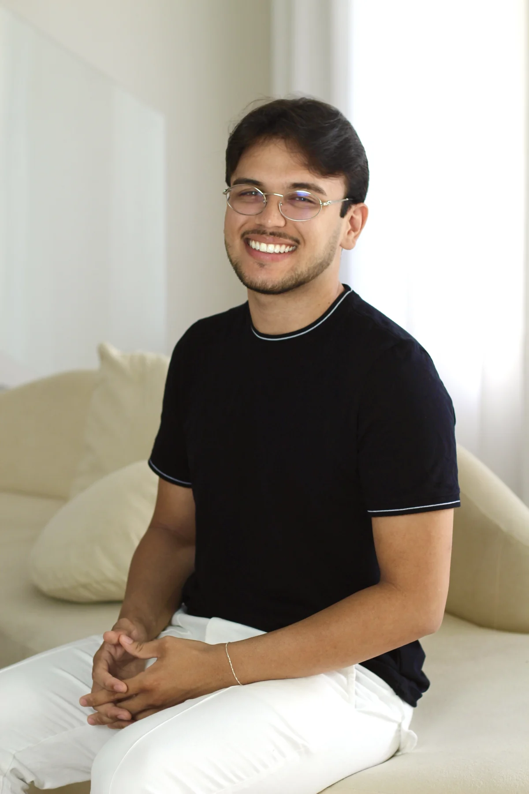

JP
João Pedro
★★★★★
“Atendimento excelente! Me ajudou muito com dores e na recuperação pós-treino. Profissional atencioso e sabe o que faz.”

MASSOTERAPIA ESPORTIVA
Cuidado especializado em massoterapia esportiva e recuperação muscular para acompanhar você em cada etapa da sua evolução.
NOSSOS SERVIÇOS
Técnicas complementares baseadas em evidências,
com foco em alívio de tensões, recuperação muscular e bem-estar.
CUIDADOS COMPLEMENTARES
Conheça cada técnica e expanda os detalhes.
Uso conforme avaliação e indicação individual.
SOBRE MIM
Massoterapeuta esportivo e acadêmico em Fisioterapia
Acredito que cuidar do corpo vai muito além de aliviar dores. É respeitar seus limites, valorizar a recuperação e entender que cada etapa faz parte da evolução. Meu trabalho é proporcionar um cuidado individualizado, utilizando a massoterapia esportiva e técnicas complementares para auxiliar na recuperação muscular, aliviar tensões e promover maior mobilidade e bem-estar.
Porque recuperar também é evoluir e o cuidado faz parte desse processo.
NOSSO ESPAÇO
Um espaço moderno, acolhedor e equipado para oferecer atendimentos de qualidade, com conforto e privacidade.
CONHECER O ESPAÇO →POR DENTRO DO ATENDIMENTO
Veja um pouco da rotina de atendimento e do espaço de David Washington.
DEPOIMENTOS
“Atendimento excelente! Me ajudou muito com dores e na recuperação pós-treino. Profissional atencioso e sabe o que faz.”
“Ambiente incrível, super organizado e atendimento de qualidade. Saí da sessão me sentindo muito melhor!”
“Profissional diferenciado! Me ajudou na recuperação e na prevenção de lesões. Recomendo demais!”
DÚVIDAS
Use o botão de WhatsApp para escolher seu procedimento e consultar os horários disponíveis. O agendamento é confirmado na conversa com David.
Os atendimentos são realizados mediante agendamento. Entre em contato pelo WhatsApp para consultar os dias e horários disponíveis.
Pix, cartão de crédito e débito.
Agende seu atendimento e escolha o procedimento ideal para o seu objetivo.
◉ AGENDAR PELO WHATSAPP⌖ Localização
R. Galiente, 1598 · P. potira
Fortaleza – CE
◷ Horários de atendimento
Terça a Sábado
(consulte horários disponíveis)
▤ Formas de pagamento
Pix, Cartão de Crédito e Débito